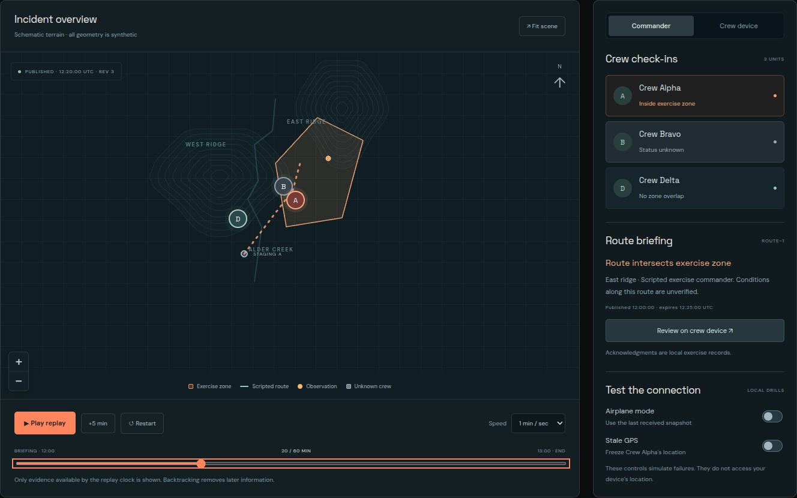
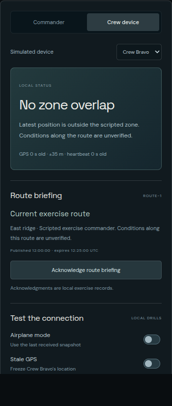
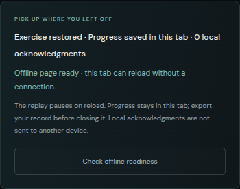
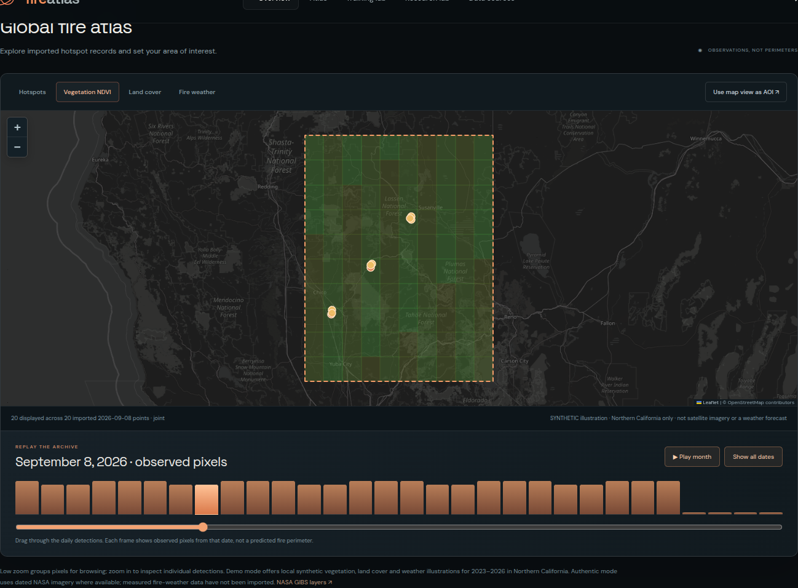
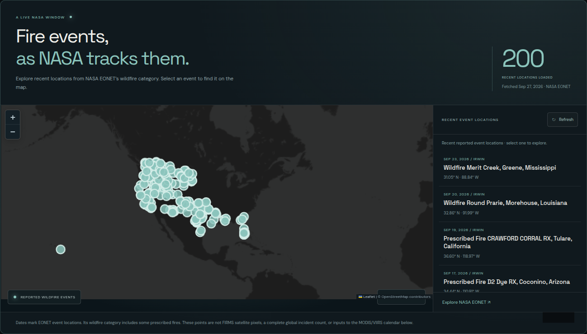
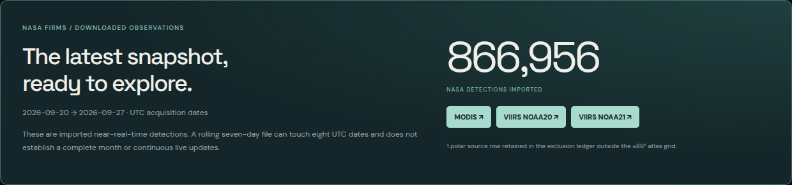
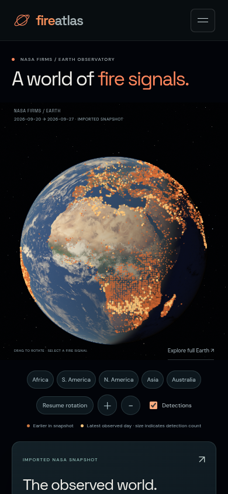

The app distinguishes missing observation coverage from zero detected activity.
Beautify next
Visualize detected versus observed cell-days using a simple denominator diagram.
Make the synthetic-mask state unmistakable without burying the result.
Design the no-mask state as an informative explanation rather than an empty panel.
Ready to present when
The presenter can explain why a missing coverage mask prevents a valid exposure rate.
The mask contains 720 fabricated source/cell/day rows. No real satellite cloud/pass mask has been imported.
fireatlasPRESENTATION & VISUAL POLISH GUIDE
PRIORITY 09 / FICTIONAL ALDER CREEK EXERCISE
Commander incident rehearsal

FICTIONAL ALDER CREEK EXERCISE · Actual current interface.
EXACT PAGE / OPEN THIS VIEWhttp://127.0.0.1:8000/training.html Interaction: Advance the replay to 12:20 UTC → inspect the zone, scripted route and crew check-ins.
Why it stands out
A second visible story connects evidence timing to a simulated team decision.
Beautify next
Prioritize replay time, received evidence and crew condition in the visual hierarchy.
Use consistent map/list colors and legible route versus zone styling.
Keep stale or disconnected crew visually distinct from fresh observations.
Ready to present when
A viewer can identify what evidence is available now and which crew information is unknown.
All crew positions, zones and routes are fictional. Route approval and thresholds are scripted exercise inputs.
fireatlasPRESENTATION & VISUAL POLISH GUIDE
PRIORITY 10 / MOBILE BROWSER / SIMULATED CREW
The mobile Crew Device view

MOBILE BROWSER / SIMULATED CREW · Actual current interface.
EXACT PAGE / OPEN THIS VIEWhttp://127.0.0.1:8000/training.html Interaction: Tap Crew device → select Crew Bravo → inspect route briefing → acknowledge a briefing.
Why it stands out
A phone-sized crew screen lets the presenter demonstrate the same scenario from a different role.
Beautify next
Make current status the first screen element; enlarge primary touch targets.
Put briefing, acknowledgment and connection state in a short action sequence.
Reduce repeated prose and make uncertainty visible through labels as well as color.
Ready to present when
On the actual presentation phone, the user can choose a crew, read the briefing and acknowledge it without horizontal scrolling.
This is a local simulated view. It does not synchronize with another phone or use the real device’s GPS.
fireatlasPRESENTATION & VISUAL POLISH GUIDE
PRIORITY 11 / VERIFIED BROWSER OFFLINE RECOVERY
Disconnection and stale-data drills

VERIFIED BROWSER OFFLINE RECOVERY · Actual current interface.
EXACT PAGE / OPEN THIS VIEWhttp://127.0.0.1:8000/training.html Interaction: Wait for Offline page ready → advance five minutes → disconnect → reload the same tab.
Why it stands out
The exercise explicitly demonstrates what happens when a connection or location update becomes unreliable.
Beautify next
Design one strong disconnected banner and a clear age indicator.
Keep recovery, last received evidence and paused replay time together.
Make reconnect and export actions easy to reach on a phone.
Ready to present when
The prepared tab reloads offline at its saved clock; it clearly labels stale evidence and still exports the exercise record.
Offline recovery is scoped to a prepared Training Lab tab. A new tab cannot invent a saved briefing.
fireatlasPRESENTATION & VISUAL POLISH GUIDE
PRIORITY 12 / ILLUSTRATIVE LOCAL LAYERS
Vegetation, cover and weather context

ILLUSTRATIVE LOCAL LAYERS · Actual current interface.
The walkthrough teaches the product by operating the real controls used elsewhere on the site.
Beautify next
Place each tour card close to its target without covering it.
Keep progress, next and back controls consistent.
Trim each stop to one idea and one visible change.
Ready to present when
A first-time user completes the five stops without help and can repeat the sensor comparison independently.
The tour deliberately uses a small July 2015 example: four MODIS pixels, twelve VIIRS pixels and four joint cell-days.
fireatlasPRESENTATION & VISUAL POLISH GUIDE
PRIORITY 15 / NASA EONET FEED / CACHE
A separate window onto reported events

NASA EONET FEED / CACHE · Actual current interface.
EXACT PAGE / OPEN THIS VIEWhttp://127.0.0.1:8000/#live-events Interaction: Choose a reported event → locate it on the map → inspect the event source and update time.
Why it stands out
Named reported events provide a recognizable entry point alongside the satellite observation tools.
Beautify next
Strengthen selection feedback between the event list and map.
Make update time and cached-versus-connected status prominent.
Keep event cards short with a consistent title, date and source.
Ready to present when
Selecting a report visibly locates it and the presenter can explain how reports differ from satellite pixels.
EONET reports remain separate from FIRMS counts. The feed may contain prescribed burns and is not a complete global incident register.
fireatlasPRESENTATION & VISUAL POLISH GUIDE
PRIORITY 16 / AUTHENTIC IMPORT LEDGER
Data provenance that a judge can inspect

AUTHENTIC IMPORT LEDGER · Actual current interface.
EXACT PAGE / OPEN THIS VIEWhttp://127.0.0.1:8000/data.html Interaction: Inspect the recent CSV snapshot → follow a satellite link → contrast with the separate synthetic showcase.
Why it stands out
The project shows where its data came from and makes the demonstration’s generated inputs explicit.
Beautify next
Use clear Authentic / Synthetic / Cached labels consistently across pages.
Lead with useful source facts; keep hashes and detailed logs expandable.
Turn imported-versus-missing coverage into a readable status summary.
Ready to present when
A judge can identify which visuals use authentic observations and which use demonstration fixtures.
916,376 authentic records total: 866,956 NASA + 49,420 NOAA. One polar NASA row is retained in the exclusion ledger.
fireatlasPRESENTATION & VISUAL POLISH GUIDE
APP STATUS / PRESENTATION FORMAT
What is the mobile app today?

Mobile globe · 390 px touch-browser emulation.
Crew Device · fictional Bravo exercise.
Now: an installable mobile web app.
The responsive website already provided the globe, atlas, research tools and Crew Device exercise. This update adds a web-app manifest, icons, standalone launch, installation instructions and an explicit offline reconnect screen.
Functional browser checks
Mobile crew selection, replay, prepared-tab offline reload, saved time/crew restoration and offline exercise export passed. The narrower Training Lab worker continues to own its offline behavior.
Not a native app release
No Android APK or iOS native project exists. No real device GPS, push alerts, background tracking or shared commander/crew sessions are implemented.
Phone presentation: use a reachable HTTPS deployment, install it from the phone’s browser, and rehearse on that physical phone.
Browser emulation and installability validation are not a physical-device installation test. The globe and analysis tools still require the application server.
Deploy the Python application and its database at a trusted HTTPS address reachable by the phone. A GitHub repository is not the running backend.
Copy the populated local database or import the original NASA CSVs on that host. A fresh checkout includes the NOAA sample and synthetic seeds; it does not include the 866,956 recent global NASA records.
Do not open localhost:8000 on the phone. That points to the phone itself. For an online LAN-only preview, run the server with --host 0.0.0.0 on a trusted network and use the laptop’s LAN address. Plain HTTP LAN access does not provide secure PWA installation or offline service workers.
2. Install from the browser
Android Chrome: menu → Install app / Add to Home screen. iPhone Safari: Share → Add to Home Screen → Open as Web App if offered.
No public HTTPS deployment or physical-phone test was completed during this documentation task. Those are the remaining setup gates for presenting from a separate phone.
fireatlasPRESENTATION & VISUAL POLISH GUIDE
PRESENTER SCRIPT / DEMONSTRATE CAUSE AND EFFECT
A five-minute presentation path.
0:00–0:45 · Earth. Rotate the globe, point out the imported snapshot date, select one cluster and inspect its evidence.
0:45–1:45 · Calendar + sensors. Open the September 2026 synthetic showcase. Show the seasonal peak, three-year baseline and MODIS / VIIRS / Joint comparison.
1:45–2:15 · Traceability. Open a detected day, expand a record, then show Download study. Explain how exported inputs reproduce the counts.
2:15–3:15 · Research. Show the overlap chart, three candidate groups and the synthetic exposure mask. Clear the mask to demonstrate why unknown coverage matters.
3:15–4:30 · Mobile crew. Open the fictional Crew Device view, advance the replay and demonstrate the disconnection drill or prepared-tab offline reload.
4:30–5:00 · Close with evidence. Return to Data Sources. State which inputs are authentic, which are synthetic, and the next visual improvement.
The strongest story is: see a signal → compare fairly → inspect the evidence → rehearse a decision.
Keep SAR, calibrated sensitivity, operational spread forecasts and real crew tracking off the feature demo until implemented and validated. They are future requirements, not available capabilities.
fireatlasPRESENTATION & VISUAL POLISH GUIDE
READINESS RECORD / USE ACCURATE PRESENTATION CLAIMS
What was checked—and what remains.
Verified in this workspace
Current globe: 866,956 authentic NASA detections, 7,307 one-degree display clusters.
Authentic database: 916,376 observations including the NOAA historical slice.
Separate full-year synthetic showcase: 11,322 records across 96 source-months.
All 56 automated tests and the application build passed after the mobile-app addition.
Fresh desktop and mobile screenshots were captured for this guide.
Mobile browser checks covered offline launch, training-worker ownership, same-tab reload, saved crew/clock and offline export.
The matching code verification log and screenshot manifest accompany this guide. These checks verify application behavior, not scientific validity or real-world crew safety.
Still requires a real input or deployment
A trusted HTTPS host reachable from the presentation phone, with the intended database loaded.
A rehearsal on the actual Android/iPhone and browser.
Native packaging if an APK or iOS build is specifically required.
Real pass/cloud masks, measured weather, validated SAR analysis and calibrated spread models for scientific claims.
Real cross-device sessions, permissions, GPS and background delivery for operational crew use.
All page links use the current local server. Replace http://127.0.0.1:8000 with the presentation host when sharing with another device. Screenshots and captions identify synthetic, authentic and fictional content.